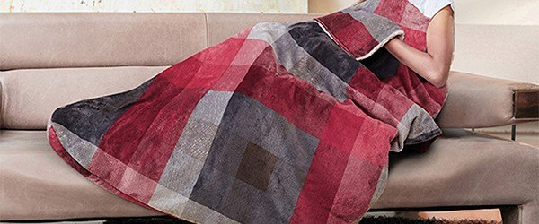
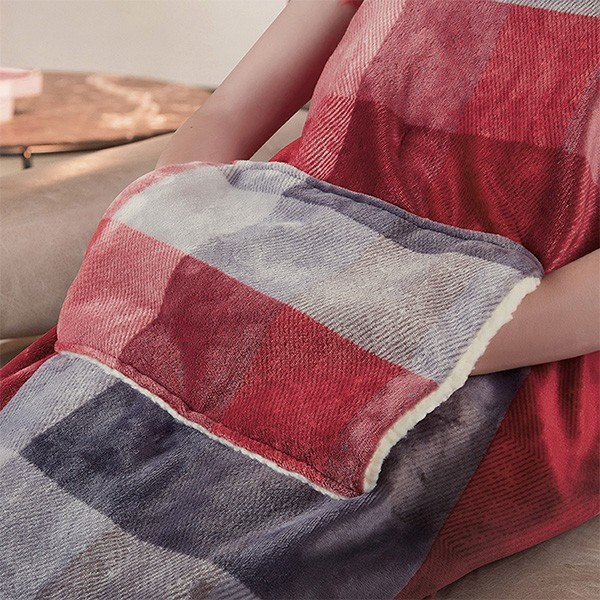
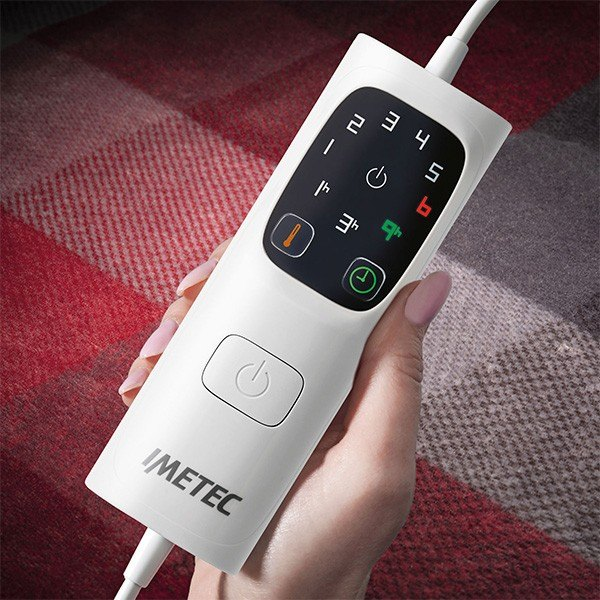
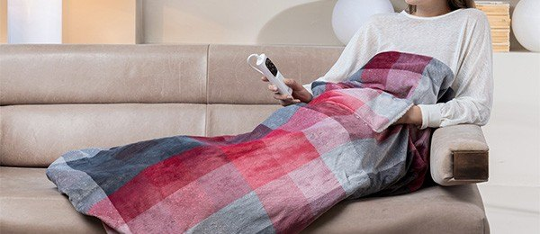

Imetec Pocket Heated Blanket GOK-840 Review at a Glance
This Imetec pocket heated blanket review looks at a winter staple in Korean living rooms and camping cars: the Imetec GOK-840 electric over-blanket. Imetec is an Italian small-appliance brand, and this one-person throw comes in a soft red check with a foot pocket at one end and a detachable LED controller.
In Korea it is sold for two scenes — curled up on the sofa when the floor heating has not kicked in yet, and in the tent or car on winter camping trips (차박). The appeal is simple: the blanket itself gets warm, so you do not need fuel or a heater for your legs.

The Foot Pocket and Controller
The detail that sets it apart from a normal electric throw is the pocket. Fold one end and your feet sit inside a closed sleeve, which is where cold always creeps in on a sofa or a camping chair. The product photos show it worn like a half sleeping bag on the couch and draped over the legs at a desk.
The controller is a white handset with a single power button and numbered heat levels. Korean spec sheets list six heat settings, a timer and a 9-hour auto shut-off; one Korean buyer review mentions timer choices of 1, 3 and 9 hours. It detaches from the blanket so the fabric can be washed.


Safety and Care Notes from the Korean Listing
The Korean retail page is unusually direct about how not to use it, and the notes are worth repeating:
- Never use it folded. Powering it on while folded can trigger the safety system and shut it off permanently.
- Avoid latex bedding and cold, heat-sensitive surfaces under it, per the listing.
- Supervise children who use it.
- Wash separately with the controller removed; no dry cleaning or bleach.
- Overheat protection and self-diagnosis are listed as built-in safety features.


Key Specs
| Spec | Korean retail listing |
|---|---|
| Brand / model | Imetec (Italy) GOK-840 pocket over-blanket |
| Size | 110 × 150 cm, about 1.5 kg |
| Power | 220–240 V, 50/60 Hz, 150 W |
| Heat settings | 6 |
| Auto-off | After 9 hours; timer included |
| Safety | Overheat protection, fault self-diagnosis |
| Fabric | Polyester outer, fleece lining |
| Pattern | Red check |
| U.S. Amazon | Korean 220 V model not confirmed — we link a similar heated-throw search |
Specs are as published on Korean retail listings (Costco Korea, SSG, price-comparison pages) and were not lab-measured by us.
How It Compares
| Imetec GOK-840 pocket blanket | Korean electric floor mat (전기매트) | Plain fleece throw | |
|---|---|---|---|
| Where the heat is | On top of you, with a foot pocket | Under you, on the floor or bed | No heat |
| Portability | Light (about 1.5 kg), car or tent with power | Bulkier, stays on the bed | Lightest |
| Best if you want | Warm legs on the sofa or at a campsite | Whole-bed warmth at night | A cheap layer |
Pros & Cons
| Pros | Cons |
|---|---|
| Foot pocket keeps feet wrapped | One-person size (110 × 150 cm) |
| 6 heat levels, timer and 9-hour auto-off | Korean 220–240 V model; needs a converter in the U.S. |
| Detachable controller, washable | Must never be powered on folded |
| Light enough for car and tent use with a power source | Needs electricity — not for off-grid camping without a power bank or site hook-up |
Who It Suits (and Who Should Skip It)
- Yes: People who are always cold on the sofa or at a home desk.
- Yes: Winter campers and car campers with a powered site.
- Yes: Anyone in Korea who wants warmth before the ondol floor heating warms up.
- No: Couples wanting one blanket for two — it is a single-person size.
- No: U.S. buyers who do not want to deal with voltage — pick a U.S.-rated heated throw.
Imetec Pocket Heated Blanket FAQ
What is the Imetec GOK-840?
It is a one-person electric over-blanket from the Italian brand Imetec, sold in Korea as a 'pocket' heated blanket in a red check pattern. One end folds into a foot pocket so your feet stay wrapped on the sofa or in a tent.
How big is it and how much power does it use?
Korean retail spec sheets list 110 × 150 cm, about 1.5 kg and 150 W at 220–240 V, 50/60 Hz.
How many heat settings and is there auto-off?
Korean retail listings describe 6 heat settings, a timer and automatic shut-off after 9 hours, plus overheating protection and a fault self-diagnosis function. The controller detaches for washing.
Can I use it in the U.S.?
The Korean model is rated 220–240 V. A U.S. 120 V outlet needs a suitable step-up converter, or you can buy a U.S.-voltage heated throw instead. That is why our shop button opens a search for similar U.S. heated throws.
Can I wash it?
Korean listings mention drum washing after detaching the controller, and warn to wash it separately and never dry-clean or bleach it. Follow the care label on your unit.
Heated Throws with a Foot Pocket
The Korean 220 V Imetec GOK-840 is not confirmed on U.S. Amazon, so here is a search for U.S.-voltage heated throws with a foot pocket.